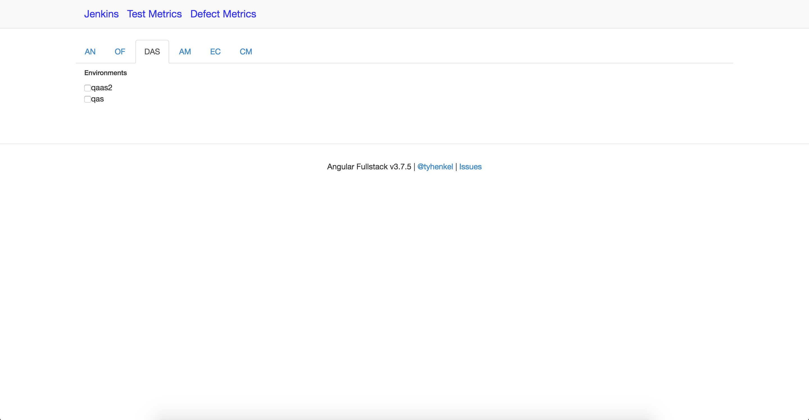
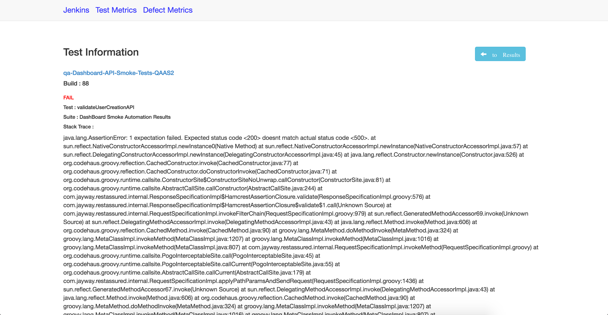

Resume
Academic Qualifications
- University of Southern California - MS Computer Science
- PES School of Engineering - B.E. Computer Science
Skills
- OS : *nix Based OS
- Databases : MySQL , MongoDB, ElasticSearch, Redis
- Languages : Python, Java , PHP
- Web : HTML ,Javascript, D3.js, CSS , jQuery
- Testing : jUnit Tests
- Misc : Apache Thrift , RabbitMQ , Zookeeper , Nginx , Jenkins
- Version Control : SVN , Git
Work Experience
- Apple Inc - Software Engineer, iCloud Services Sept 2016 - Current
- Skyhigh Networks - Intern May- August 2016
- Quality Metrics Dashboard :
Built a dashboard for use by various teams to gain insights
about the progress of test automations, stats on job failures and even
tracking of story point completions for each sprint.
The dashboard was divided into two halves :
Power BI :
The first part of the project deals with getting data out of JIRA and Zephyr and adding it into a database for easier tracking and analytics. This data now feeds into a Microsoft app named Power BI.
Using Power BI, I created two sets of graphs for the Quality Assurance team, and one
for the Program Management team.
The QA team needed metrics to track the state of all the tests currently being run on their products. The Test Metrics dashboard that I build helped answer questions like
" How many smoke tests failed last night ? ", "What percent of tests have been automated vs how many are still being run manually ?" , "How many tests have been created per release ? " and various others.
They also required similar metrics about the types and count of defects being filed on each of their products. The Defects Metrics dashboard that I created helped the QA team
see a visual representation of various defect trends like " The number of defects being filed vs the number being resolved ", " The number of defects being reopened
after resolution ", a break-up of "all the defects filed on each day by the products" and various others.
The Program Management team required different metrics to track each team's progress
through a sprint and release. I created a Velocity dashboard which visualised the
number of story points that were still open at the start of every day vs the number
that were resolved. These graphs were further divided by the number of story points
that were added at the start of the sprint i.e. that were planned, vs the number
that were added during the sprint i.e unplanned.
This dashboard helped the Program Management team in tailoring the number of tasks
planned for a sprint for each engineering team, based on their past sprint velocities.
Tech used : Python , MySQL , Power BI Jenkins Dashboard : The second part of the project required a report on the build information for all the automated tests that were executed each day. Since this dashboard needed a granular report than the ones created by Power BI, I created a Single Page Application using the MEAN stack. An independent script collected test execution data from Jenkins and stored it in MySQL. The dashboard app then allowed the users to select an environment that they want data on, like QA env or Prod env etc. Based on that, the dashboard would list the various projects that had automated tests executed in that environment. Once the users selected a project, all the tests of that project that have ever been automated is shown. Picking a particular test now gives a report of all the times it has been executed, along with the pass or fail state. The failed tests can further be selected to view the stack trace for each failure.
Tech used : Python , MySQL , Express.js, Angular.js, Node




- Capillary Technologies - Senior Software Developer 2012-2014
- Subscription Service :
Led a team in building a module which manages subscriptions of users with retail
organizations. This module was a complete rehaul of the old subscription service
that was in place, bringing in a more centralized end point. This also allowed 10 - 15 of
the inhouse services to use the module using exposed APIs.
Tech used : Java , PHP , MySQL , Redis ( as a cache ) , Thrift - Bulk Messaging Module:-
The module completely implemented Publisher-Subscriber model in order to send out promotions and offers, on behalf of our clients to their customers, most often in the orders of millions. Due this high scale, the module had to be available and reliable at all times, as well as mention scalable and maintainable.
More info on this project can be found here :
MySQL as a Queue - Antipattern
Tech Used : Java , PHP , MySQL , RabbitMQ , Thrift - Campaign Shard Service:-
Created a service that had to manage basic information of customers which numbered in the order of 10s of millions. A sharding policy was put in place, which enabled us to handle such large data without running into any memory issues by distributing the load across several different databases.
Tech Used : Java , PHP , MySQL , Thrift - Filter Service:-
Created a service which helped in filtering out customers, in the order of tens of millions into groups of thousands, based on various filtering criteria. This helped our clients in creating more targeted groups based on KPIs like Avg. Bill Amount, Lifetime purchases etc. Overall more than 50 KPIs have been supported by this service.
Tech Used : Java , PHP , MySQL , Thrift
Academic Projects
- Visualization for DIG :-
Created a visualization for domain data present in ElasticSearch for various metrics like frequency by year, counts based on certain features etc. This was a part of the Domain Specific Insight Graphs (DIG) project from the Information Sciences Institute at USC.
Tech Used : AngularJS, ElasticSearch, D3.js, Bootstrap CSS, HTML5
- FOSSHelper:-
Information Integration on the Web project to create a recommendation system that helps people to get started with contributing to FOSS. It tailors the recommendations to the user by linking to their LinkedIn account, and also parses skills listed on their resumes.


Github Link
YouTube Demo
Tech Used : AngularJS, Node.js, Express.js, ElasticSearch, Bootstrap CSS, Jade
Weekend Hacks
- Trunc8or:-
Worked on a Chrome extension to help fix a problem I was having with the 140 char limit on Twitter updates. It can be found on the Chrome web store named “Trunc8or”. - Leftover Fun :-
Worked on a recipe aggregator for the International Women’s Day 2015 hackathon conducted by hacker earth.